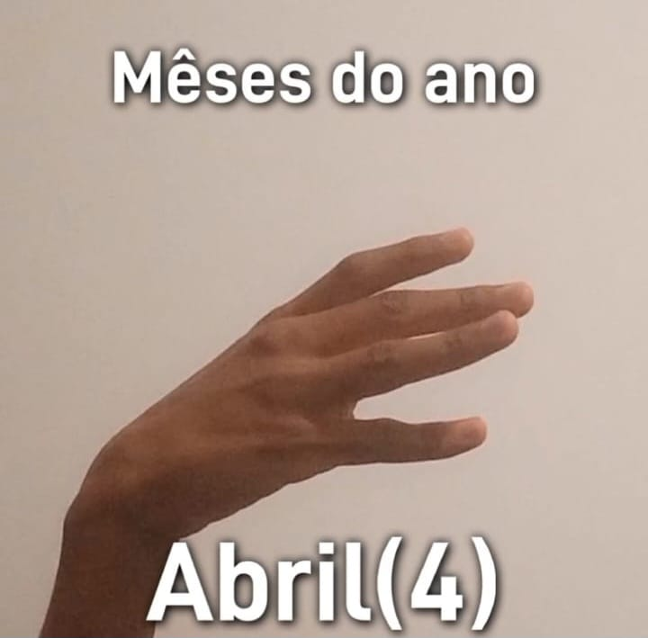

Números e Meses
Neste vídeo, você encontrará uma apresentação completa dos números e meses em Libras, a Língua Brasileira de Sinais. Cada sinal é demonstrado em detalhes para facilitar o aprendizado e a prática da língua.
Número 0
0 - Para fazer o Número 0, Junte as pontas de todos os dedos assim como na imagem:

Número 1
1 - Para o 1, feche os dedos da mão e mantenha o polegar elevado, como na imagem:

Número 2
2 - Para o 2, feche os dedos da mão e mantenha o polegar e o indicador elevados, como na imagem:

Número 3
3 - Para o 3, mantenha os dedos anelar, médio e indicador levantados, como na imagem:

Número 4
4 - Para o 4, mantenha os dedos mínimo, anelar, médio e indicador levantados, como na imagem:

Número 5
5 - levante os dedos indicador e médio de forma curvada, como na imagem:

Número 6
6 - una os outros dedos com a primeira dobra do polegar, mantendo-o levantado, como na imagem:

Número 7
7 - aponte com o indicador para o lado com o polegar na mesma direção, mantendo os outros dedos fechados, como na imagem:

Número 8
8 - feche a mão e mantenha o polegar sobre os dedos indicador e médio, como na imagem:

Número 9
9 - una os outros dedos com a primeira dobra do polegar, mantendo-o para baixo, como na imagem:

Janeiro
Janeiro - Para Janeiro, feche os dedos da mão e mantenha o polegar elevado, como na imagem:
Fevereiro
Fevereiro - Para Fevereiro, feche os dedos da mão e mantenha o polegar e o indicador elevados, como na imagem:

Março
Março - Para Março, mantenha os dedos anelar, médio e indicador levantados, como na imagem:

Abril
Abril - Para o Abril, mantenha os dedos mínimo, anelar, médio e indicador levantados, como na imagem:
Maio
Maio - levante os dedos indicador e médio de forma curvada, como na imagem:
Junho
Junho - una os outros dedos com a primeira dobra do polegar, mantendo-o levantado, como na imagem:
Julho
Julho - aponte com o indicador para o lado com o polegar na mesma direção, mantendo os outros dedos fechados, como na imagem:
Agosto
Agosto - feche a mão e mantenha o polegar sobre os dedos indicador e médio, como na imagem:
Setembro
Setembro - una os outros dedos com a primeira dobra do polegar, mantendo-o para baixo, como na imagem:
Outubro
Outubro - Feche os dedos da mão e mantenha o polegar elevado, depois, Junte as pontas de todos os dedos assim como no vídeo:
Novembro
Novembro - Feche os dedos da mão e mantenha o polegar elevado, depois, repita o processo, como no vídeo:
Dezembro
Dezembro - Feche os dedos da mão e mantenha o polegar elevado, depois, feche os dedos da mão e mantenha o polegar e o indicador elevados, como no vídeo:
Exemplo
Faça o sinal da palavra Dia, fazendo a letra D (pontas dos dedos unidas com indicador levantado) e movimentando em forma de arco, após, faça o símbolo do 2 e depois o 8, formando 28.
Faça o sinal da palavra Mês, raspando com o dedo indicador dobrado de uma mão, no dedo indicador levantado da outra mão, após isso, faça o símbolo do 9.
Por fim, faça o sinal de ano, com as duas mãos fechadas, com uma delas completando uma volta ao redor da outra, depois fazendo os números 2, 0, 0 e 6, formanto Dia 28 Mês 9 Ano 2006 (28/09/2006), assim como no vídeo: